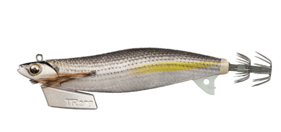
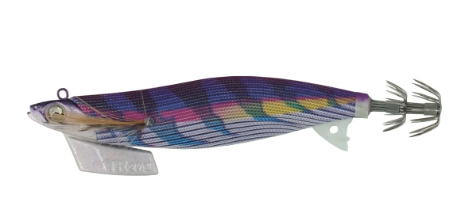
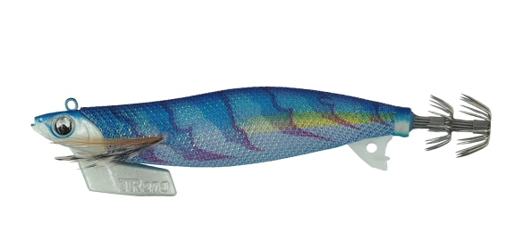
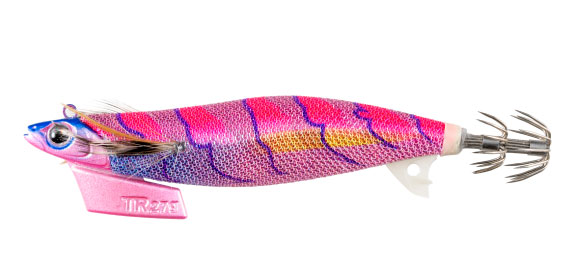

エギ王TR
（EGI-OH TR）
エギ王TRはYAMASHITA（ヤマシタ）のティップラン専用エギです。
「動かずに泳ぐ」という一見相反する要素を融合させたモデル。アタリが集中する誘いの直後にエギがスラロームしたりブレたりしないよう、デカ針・フィン・シンカー・ボディの全身で姿勢を安定させ、ピタッと止まる無防備な餌を演出します。

画像出典:ヤマシタ公式HP
スペック
- メーカー
- YAMASHITA（ヤマシタ）
- タイプ
- ティップラン専用エギ
- サイズ
- 3号／3.5号
- 全長
- 95mm／105mm
- 重さ
- 21g／27g
- 沈下速度
- 1.5秒/m（3号）／1.2秒/m（3.5号）
- ターゲット
- アオリイカ（ボートのティップラン）
▼今すぐチェック

エギ王TRの特徴
全身安定構造で、誘いの後にピタッと止まる
-
デカ針で姿勢が安定
リア側に搭載したデカ針がパラシュートのように働き、エギの動きを安定させます。イカの足にしっかり掛かるので、身切れ防止にもつながります。
-
十字形状のハイドロフィンTR
縦・横方向のブレを抑える十字形状のフィンを採用。釣り人から遠く離れた潮流の中でも、エギの姿勢を安定させます。フィンは490グローで、深場や笹濁りでもアピールします。
-
スズ製のハイドロシンカーとボディ
舵の効果を持つ独自形状のシンカーは、環境負荷に配慮したスズ製。横に張り出したハイドロボディと合わせて、ここぞというタイミングでピタッと止まります。
エギ王TRの使い方
基本はボートからのティップラン。エギを着底させたら、シャクリで誘い上げ、ピタッと止めてアタリを待ちます。
アタリはロッドの穂先（ティップ）に出ることが多いので、止めている間は穂先の動きに集中しましょう。潮が速いときは重い3.5号、緩いときは3号と使い分けます。
エギ王TRの得意な状況
ボートからのティップランエギング。深場のアオリイカを狙うときや、潮流の中でエギの姿勢を安定させたいときに向いています。
ワンポイント
ティップランエギング発祥の地・三重県で「魔法のエギ」と呼ばれた人気カラー「コハダフラッシュ」は、ベイトフィッシュが多いときや澄み潮で特に頼れる1色です（3.5号のみ）。
サイズの使い分け
| サイズ | 全長／重さ | 沈下速度 |
|---|---|---|
| 3号 | 95mm／21g | 1.5秒/m。潮が緩いときや浅めのポイントに |
| 3.5号 | 105mm／27g | 1.2秒/m。潮が速いときや深場に |
シンカーはスズ製のため、鉛より体積が大きく水の抵抗を受けやすい分、最適な安定性を出せる重さに設定されています。
オススメカラー
公式ラインナップから4色を紹介します（カラー名は公式の表記のまま）。

038 コハダフラッシュティップラン発祥の地・三重で「魔法のエギ」と呼ばれた人気カラー。澄み潮やベイトが多いときに（3.5号のみ）。

056 パープルパープルシーンを選ばず活躍する人気カラー。澄み潮や深場での実績が高い。

060 ケイムラブルーケイムラボディとクリアブルー。澄み潮に馴染み、活性の低いイカに効果的。

101 フロストピンク朝夕マヅメの光になじむピンクボディ。差し色で輪郭を引き締めたカラー。
画像出典:ヤマシタ公式HP
エギ王TRに似ているルアー
-
 エギ王Kディープ
ヤマシタ
詳細はこちら＞
エギ王Kディープ
ヤマシタ
詳細はこちら＞
深場や潮の速い場所に向いたディープタイプ。ショアから深場を狙いたいときに。
-
 アーマー
ヤマシタ
詳細はこちら＞
アーマー
ヤマシタ
詳細はこちら＞
イカメタル用のスッテ。ボートからケンサキイカやヤリイカを狙いたいときに。
-
 エギ王K
ヤマシタ
詳細はこちら＞
エギ王K
ヤマシタ
詳細はこちら＞
安定したフォールのエギ。ショアからのエギングで使いたいときに。